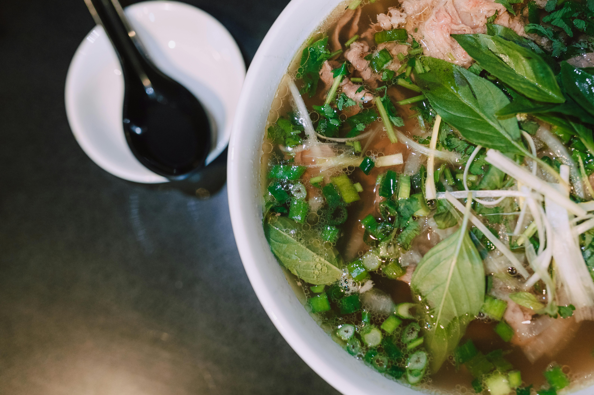

Home
Pho soup delight

An incredible Pho soup for asian food lovers!
This recipe is reallysimple to implement.
Preparation: 20 minutes.
Cooking time: 15 minutes
Servings: 4
Ingredients
- 2 Beef soup bones
- 200 g. Rice noodles
- 400 g. Beef (sliced)
- 4 teaspoon fish sauce
- 2 onions (sliced)
- 2 clovers garlic, chopped
- 1 teaspook dried oregano
- 1 teaspoon roasted sesame oil
- salt and pepper, as per taste
- 1 lime (in quarters)
- 4 green onions (chopped)
- 2 tblsp sriracha
- 1 cup chopped coriander
Steps
- In a large pot bring 12 cups of water to a boil. Put the beef bones and cook for 20 minutes. Remove the bones and strain the water. Put aside.
- Put 8 liters of water in a large pot with a little salt and bring to a boil. Put the noodles and cook for 3 minutes or until tender to taste. Drain and put aside.
-
In the bone's broth, add the onions and the sesame oil. Bring to a boil and cook 10 minutes.Add the onions, garlic, parsley, oregano and salt and pepper; cook and stir until the beef is done (~5 minutes).
-
Serve in medium size bowls. Add green onions; add (to taste) sriracha sauche and coriander. Squeeze a quarter of a lime on the mixture. Serve and have a beer!